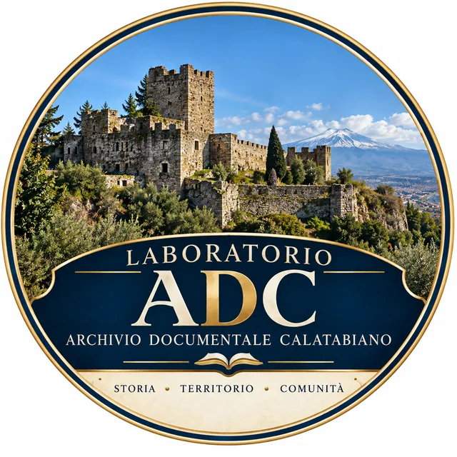

Memoria · Territorio · Comunità
L'Archivio Documentale di Calatabiano
Documenti, fotografie e testimonianze per conoscere la storia, il territorio e la memoria di Calatabiano. La consultazione è gratuita per tutti.
Origine e dedica alla comunità · Contribuisci alla memoria del paese · Facebook ADC

La guida dell'Archivio
✦ ELENA
Chiedimi di un luogo, di una persona o di un documento. Ti aiuterò a trovare le fonti consultabili e a distinguere ciò che sappiamo da ciò che resta da verificare.
Elena presenta l’Archivio
Audioguida della Chiesa MadreProva a chiedere:
Un'idea di Michele Bottino · Sviluppo DarkAronte
Storie da scoprire
Studi, testimonianze e percorsi per approfondire la storia del territorio.
Origine dell’Archivio e dedica della famiglia Bottino alla comunità
L’Archivio Documentale Calatabiano (ADC) è un progetto culturale indipendente, ideato e curato da Michele Bottino per raccogliere, studiare e rendere accessibili testimonianze e fonti sulla storia di Calatabiano.
La famiglia Bottino, nel suo insieme, mette gratuitamente l’Archivio a disposizione della comunità di Calatabiano: dei cittadini, delle scuole, di chi svolge ricerche e di chi desidera conoscere la storia del territorio. È un contributo volontario alla memoria collettiva, nato dal legame con il paese e dal desiderio di trasmettere alle nuove generazioni quanto emerge dai documenti.
Questa iniziativa è dedicata alla memoria di Antonino Bottino, storico impiegato comunale di Calatabiano e appassionato della storia del paese. Il ricordo del suo interesse per il territorio accompagna l’impegno della famiglia nella conservazione e nella diffusione della memoria locale.
L’Archivio indica la provenienza delle fonti e distingue le testimonianze documentate dalle interpretazioni. La consultazione del sito è gratuita; restano fermi i diritti degli autori, dei titolari dei materiali e degli istituti che conservano i documenti. L’ADC non è un archivio comunale né una fondazione giuridicamente costituita.
La famiglia Bottino
Iniziativa per la comunità di Calatabiano
Ideazione, ricerca e cura dell’Archivio: Michele Bottino.
Altre risorse dell'ArchivioRicerca, dossier, dedica, fotografie e approfondimenti
Da dove vuoi cominciare?
Segui la storia del territorioVedi tutti gli argomenti dell’ArchivioUltima ricerca: Calatabiano in ParlamentoMonasteri, conventi e reti religiose
Un archivio aperto alla comunità
Il progetto curato da Michele Bottino, offerto alla comunità anche a nome della sua famiglia, raccoglie testimonianze del territorio e sviluppa ricostruzioni storiche a partire dalle fonti effettivamente esaminate. Pergamene, registri, atti, iscrizioni e documenti di epoche diverse sono studiati nel loro contesto; guide, inventari e pubblicazioni moderne aiutano a individuarli e interpretarli, senza sostituirne la lettura. Ogni risultato distingue ciò che è attestato da ciò che rimane incerto. Leggi la dedica oppure scopri il metodo di ricerca.

ARCHIVIO DOCUMENTALE CALATABIANO
Consulta l’archivio
Scopri persone, luoghi e avvenimenti attraverso le fonti storiche. L’Archivio, curato da Michele Bottino, è accessibile gratuitamente a tutta la comunità.
Esplora per argomento
Accedi ai percorsi dedicati a luoghi, persone e testimonianze storiche di Calatabiano.
Ogni notizia ha una fonte
L'inventario riunisce testimonianze già studiate e ne indica la data, la provenienza e i limiti. Per ogni argomento puoi passare dalla risposta sintetica al documento e al dossier di approfondimento.
Esplora Calatabiano attraverso i luoghi
Un atlante storico-documentario collega luoghi, cronologia e fonti, distinguendo le identificazioni documentate dalle ipotesi.
Una verifica documentaria da esaminare
Il confronto delle riproduzioni digitali dei Processi 184 e 334 ha identificato nove corrispondenze fotografiche tra raccolte di studio denominate diversamente. Sono consultabili metodo, dati e limiti dell'analisi. L'attribuzione archivistica dei manoscritti resta da convalidare.
Dossier di ricerca
Le indagini sono raccolte per tema. Ogni dossier distingue i fatti documentati dalle ricostruzioni interpretative.
Il Processo 334
Lettura critica delle carte e problemi di attribuzione archivistica.
Cruïlles, Mirulla e lo zucchero
Potere feudale ed economia nel Quattrocento.
Il castello nel 1213 e gli zuccheri nel 1537
Due testimonianze documentarie di epoche differenti.
Acque, mulini e confini
Documenti monastici e territorio fra il 1101 e il 1245.
Chiese e fonti medievali
Testimonianze ecclesiastiche e problemi di identificazione.
Calatabiano 1922–1943
Documenti e testimonianze fra fascismo e seconda guerra mondiale.
Il ponte sull'Alcantara
Il ponte e le testimonianze storiche sul territorio.
Infrastrutture e immagini del Novecento
Cartoline storiche e documentazione sulle opere irrigue Bufardo–Torrerossa, con cautele sulla datazione.
Opere pubbliche 1860–1866
Interventi e documentazione amministrativa.
Il terremoto del 1818
Fonti e ricostruzione degli effetti sul territorio.
L'epigrafe del Santissimo Crocifisso
Studio fotografico del fregio, con cinque scatti di Michele Bottino realizzati il 9 novembre 2026.
Una croce per cinque onze (1502)
La commissione di Matteo di Villa a Salvo d’Antonio: opera, prezzo e testimonianze storiche.
La Calata di San Filippo
Origini del culto, testimonianze ottocentesche e tradizioni popolari.
Elena, la guida dell’Archivio
Vuoi conoscere la storia di un luogo, cercare una persona o trovare un documento? Elena ti aiuta a consultare le fonti disponibili e a distinguere le notizie verificate dalle questioni ancora aperte.
Un’idea di Michele Bottino, sviluppata da DarkAronte.
Documenti sulla storia di Calatabiano
Nuove schede su notai medievali, storia ecclesiastica del Cinquecento e inventari della baronia di Calatabiano. Le fonti bibliografiche e inventariali sono distinte dagli originali non ancora collazionati.
Biblioteca ADC
La ricerca documentaria dialoga con i libri e gli studi dell'autore. Le pubblicazioni interpretative non sostituiscono la verifica delle fonti originali.
Come distinguere fatti e ipotesi
Una testimonianza, un'ipotesi e un fatto accertato non hanno lo stesso valore. ADC rende riconoscibili i livelli di certezza e aggiorna le ricostruzioni quando emergono nuove fonti.
Carta del Laboratorio · Temi di ricerca · Impara a valutare le fonti
Contribuisci alla memoria di Calatabiano
Documenti, fotografie, riferimenti bibliografici e testimonianze possono aiutare la ricerca, previa verifica della provenienza e dei diritti.
Lingue, alfabeti e scritture storiche
Una galleria documentaria per osservare le forme delle lettere e distinguere iscrizioni, manoscritti e trascrizioni a stampa nel contesto della Sicilia medievale.
Palazzi, portali e architetture storiche
Un nuovo percorso sull'eredità edilizia dei Gravina-Cruyllas: il portale del Palazzo Gravina in centro, la residenza e il fondaco di San Marco, le trasformazioni dopo il 1693 e le fonti ancora da controllare.
Scopri il patrimonio edilizio e le immagini storiche → · Leggi i registri della baronia →